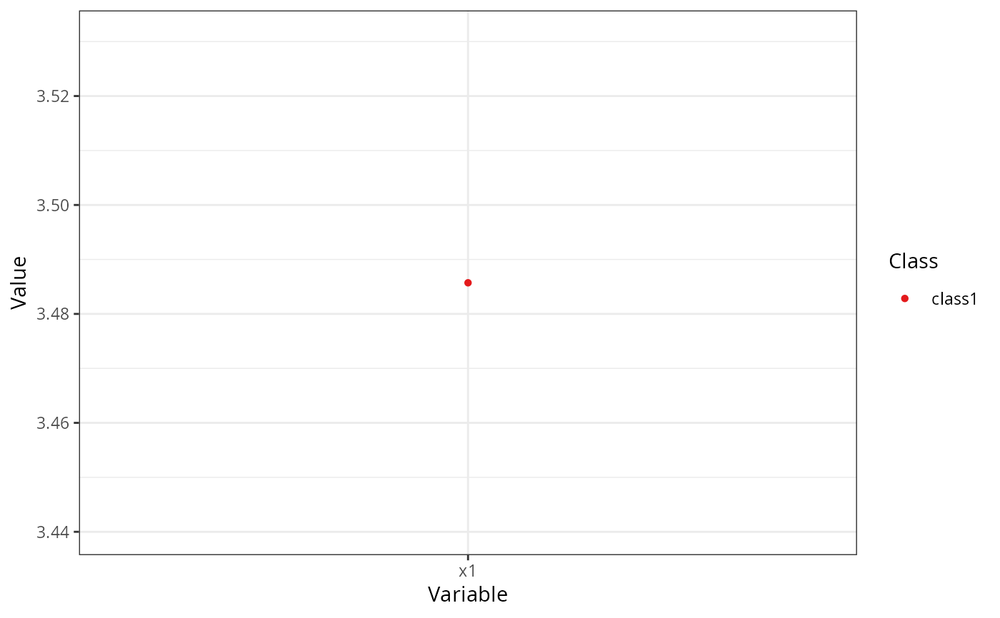

Creates a profile plot (ribbon plot) according to best practices, focusing on the visualization of classification uncertainty by showing:
Bars reflecting a confidence interval for the class centroids
Boxes reflecting the standard deviations within each class; a box encompasses +/- 64% of the observations in a normal distribution
Raw data, whose transparency is weighted by the posterior class probability, such that each observation is most clearly visible for the class it is most likely to be a member of.
plot_profiles( x, variables = NULL, ci = 0.95, sd = TRUE, add_line = FALSE, rawdata = TRUE, bw = FALSE, alpha_range = c(0, 0.1), ... ) # S3 method for default plot_profiles( x, variables = NULL, ci = 0.95, sd = TRUE, add_line = FALSE, rawdata = TRUE, bw = FALSE, alpha_range = c(0, 0.1), ... )
| x | An object containing the results of a mixture model analysis. |
|---|---|
| variables | A character vectors with the names of the variables to be plotted (optional). |
| ci | Numeric. What confidence interval should the error bars span? Defaults to a 95% confidence interval. Set to NULL to remove erro rbars. |
| sd | Logical. Whether to display a box encompassing +/- 1SD Defaults to TRUE. |
| add_line | Logical. Whether to display a line, connecting cluster centroids belonging to the same latent class. Defaults to FALSE, as it is not recommended to imply connectivity between the different variables on the X-axis. |
| rawdata | Should raw data be plotted in the background? Setting this to TRUE might result in long plotting times. |
| bw | Logical. Should the plot be black and white (for print), or color? |
| alpha_range | The minimum and maximum values of alpha (transparency) for the raw data. Minimum should be 0; lower maximum values of alpha can help reduce overplotting. |
| ... | Arguments passed to and from other functions. |
An object of class 'ggplot'.
Caspar J. van Lissa
df_plot <- data.frame(Variable = "x1", Class = "class1", Classes = 1, Model = "equal var 1", Value = 3.48571428571429, se = 0.426092805342181, Value.Variances = 3.81265306156537, se.Variances = 1.17660769119959) plot_profiles(list(df_plot = df_plot, df_raw = NULL), ci = NULL, sd = FALSE, add_line = FALSE, rawdata = FALSE, bw = FALSE)#> Called from: plot_profiles.default(list(df_plot = df_plot, df_raw = NULL), #> ci = NULL, sd = FALSE, add_line = FALSE, rawdata = FALSE, #> bw = FALSE) #> debug at C:/Git_Repositories/tidySEM/R/plot-profiles.R#57: df_plot <- droplevels(x[["df_plot"]]) #> debug at C:/Git_Repositories/tidySEM/R/plot-profiles.R#58: if (rawdata) { #> df_raw <- droplevels(x[["df_raw"]]) #> if (!all(unique(df_plot$Variable) %in% unique(df_raw$Variable))) { #> stop("Could not match raw data to model estimates.") #> } #> df_raw$Variable <- as.numeric(df_raw$Variable) #> } #> debug at C:/Git_Repositories/tidySEM/R/plot-profiles.R#67: if (!inherits(df_plot[["Variable"]], "factor")) { #> df_plot$Variable <- factor(df_plot$Variable) #> } #> debug at C:/Git_Repositories/tidySEM/R/plot-profiles.R#68: df_plot$Variable <- factor(df_plot$Variable) #> debug at C:/Git_Repositories/tidySEM/R/plot-profiles.R#70: level_labels <- levels(df_plot$Variable) #> debug at C:/Git_Repositories/tidySEM/R/plot-profiles.R#71: df_plot$Variable <- as.numeric(df_plot$Variable) #> debug at C:/Git_Repositories/tidySEM/R/plot-profiles.R#74: if (bw) { #> classplot <- ggplot(NULL, aes_string(x = "Variable", y = "Value", #> group = "Class", linetype = "Class", shape = "Class")) #> } else { #> classplot <- ggplot(NULL, aes_string(x = "Variable", y = "Value", #> group = "Class", linetype = "Class", shape = "Class", #> colour = "Class")) + scale_colour_manual(values = get_palette(max(df_plot$Classes))) #> } #> debug at C:/Git_Repositories/tidySEM/R/plot-profiles.R#85: classplot <- ggplot(NULL, aes_string(x = "Variable", y = "Value", #> group = "Class", linetype = "Class", shape = "Class", colour = "Class")) + #> scale_colour_manual(values = get_palette(max(df_plot$Classes))) #> debug at C:/Git_Repositories/tidySEM/R/plot-profiles.R#99: if (rawdata) { #> classplot <- classplot + geom_jitter(data = df_raw, width = 0.2, #> aes_string(x = "Variable", y = "Value", shape = "Class", #> alpha = "Probability")) + scale_alpha_continuous(range = alpha_range, #> guide = "none") #> } #> debug at C:/Git_Repositories/tidySEM/R/plot-profiles.R#113: classplot <- classplot + geom_point(data = df_plot) + scale_x_continuous(breaks = 1:length(level_labels), #> labels = level_labels) + theme_bw() + theme(panel.grid.minor.x = element_blank()) #> debug at C:/Git_Repositories/tidySEM/R/plot-profiles.R#119: if (add_line) classplot <- classplot + geom_line(data = df_plot) #> debug at C:/Git_Repositories/tidySEM/R/plot-profiles.R#122: if (!is.null(ci)) { #> ci <- qnorm(0.5 * (1 - ci)) #> df_plot$error_min <- df_plot$Value + ci * df_plot$se #> df_plot$error_max <- df_plot$Value - ci * df_plot$se #> classplot <- classplot + geom_errorbar(data = df_plot, aes_string(ymin = "error_min", #> ymax = "error_max"), width = 0.4) #> } #> debug at C:/Git_Repositories/tidySEM/R/plot-profiles.R#133: if (sd) { #> df_plot$sd_xmin <- df_plot$Variable - 0.2 #> df_plot$sd_xmax <- df_plot$Variable + 0.2 #> df_plot$sd_ymin <- df_plot$Value - sqrt(df_plot$Value.Variances) #> df_plot$sd_ymax <- df_plot$Value + sqrt(df_plot$Value.Variances) #> if (bw) { #> classplot <- classplot + geom_rect(data = df_plot, aes_string(xmin = "sd_xmin", #> xmax = "sd_xmax", ymin = "sd_ymin", ymax = "sd_ymax", #> linetype = "Class"), colour = "black", fill = ggplot2::alpha("grey", #> 0), inherit.aes = FALSE) #> } #> else { #> classplot <- classplot + geom_rect(data = df_plot, aes_string(xmin = "sd_xmin", #> xmax = "sd_xmax", ymin = "sd_ymin", ymax = "sd_ymax", #> colour = "Class"), fill = ggplot2::alpha("grey", #> 0), inherit.aes = FALSE) #> } #> } #> debug at C:/Git_Repositories/tidySEM/R/plot-profiles.R#172: if (length(unique(df_plot$Model)) > 1) { #> classplot <- classplot + facet_wrap(~Model, labeller = label_both) #> } #> debug at C:/Git_Repositories/tidySEM/R/plot-profiles.R#175: suppressWarnings(print(classplot))#> debug at C:/Git_Repositories/tidySEM/R/plot-profiles.R#176: return(invisible(classplot))